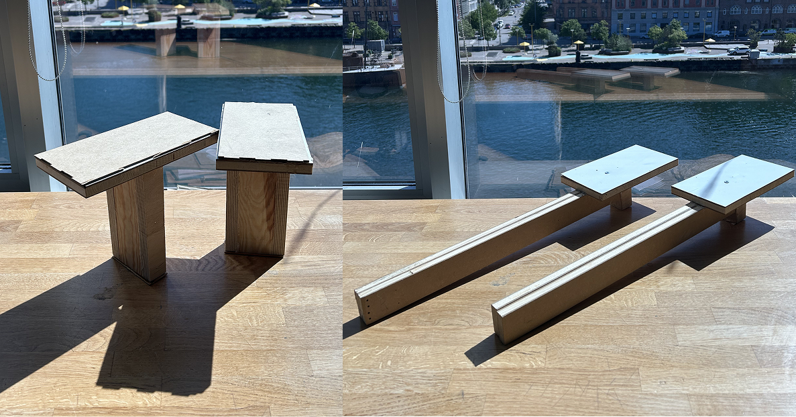
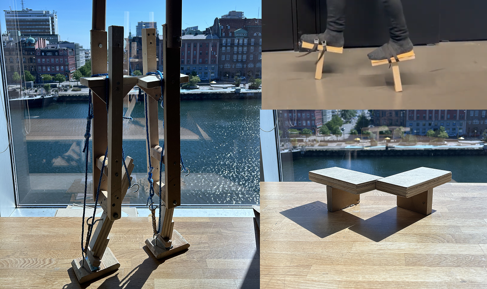
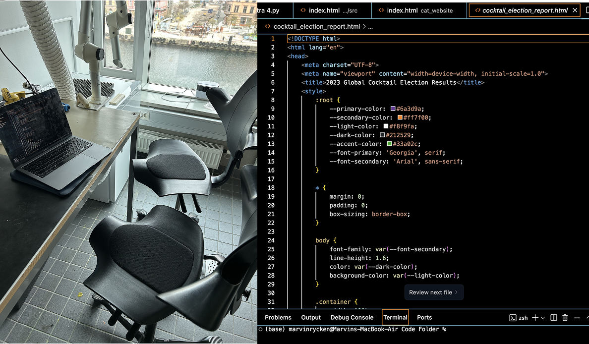

Hello, I'm Marvin, a User Experience
Designer
This is a portfolio that showcases my projects, education, and personality
Marvin Rycken
Malmö, Sweden


Marvin Rycken
Interaction Designer, with knowledge & experience in sociology, programing, artificial intelligence and with plethora of additional skills that gathered along the way. Pleasure to make your acquaintance

The Mapping of Sweden
Studying the ways Sweden is viewed, and how it changes our prespective of the region
This Project is apart of the course I am currently taking with Stockholm University. I have been doing this course in order to get myself into the mindset of GIS and Urban Planning. This project mainly involves the using multiple categories to display Sweden in various way get a better understanding of the region both in a environmental and human prespective. I also envision that the future direction of this simple project being developed towards helping environmental surveying efforts, when planning for urban development.


Kinesthetics Prototyping
Several prototypes focusing on human movement during my interaction design bachelors
This was a project was apart of my second year final essay in my bachelor of Interaction Design. The purpose of this project was to study how people adapt to diffrent footwear and its diffrent premonitions. By studying how we adapt to these diffrent walking methods, I could potentially reveal some insight into how quick and effective we can adapt to changes in our locomotion.


Malmö Library Research
A user Research Project I did with Malmö Central Library Organization
This project was in collaboration with Malmö Central Library Organization, who were our clients for the duration of the project. The primary focus of the project was doing qualitative research and survey work with the guests of the libraries. This was done to help them develop new research methods for the organization to use, in order for them to better provide to needs and wants guests to the libraries.


Astra Programing AI
Final thesis project focused on examine how programmers and AI can collaborate
This was my thesis project of Interaction Design Bachelor's which focused on building an AI that was able speak to programmers and be able to better provide to them. The purpose of this interaction was the study how vocal communication could help programmers communicate their wants, when using an AI programing assistant. In this case using the AI that a built named Astra.
